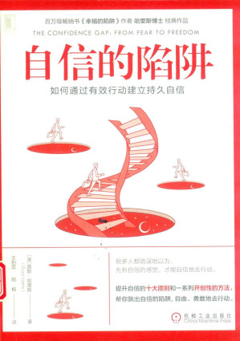

自信的陷阱：如何通过有效行动建立持久自信
[澳]路斯·哈里斯（Russ Harris） 著|王怡蕊 陆杨 译
推荐序
译者序
引言
第一部分 热身
第1章 何苦呢
第2章 美好的旧时光
第3章 是对是错
第二部分 双刃剑
第4章 并非一定如此
第5章 脱钩
第6章 永远不缺话说
第7章 自尊陷阱
第8章 全心参与的规则
第9章 轻嗅花香
第10章 心理迷雾
第三部分 你的动力是什么
第11章 动力之源
第12章 成功陷阱
第13章 魔法胶水
第四部分 驯服你的恐惧
第14章 恐惧陷阱
第15章 充分的空间
第16章 驾驭野马
第五部分 进行自信游戏
第17章 摆脱桎梏
第18章 是什么阻碍了你
第19章 动机陷阱
第20章 自我接纳的力量
第21章 慢慢变好
第22章 达到顶峰
第23章 永无止境
推荐序
译者序
引言
第1章 何苦呢
第2章 美好的旧时光
第3章 是对是错
第4章 并非一定如此
第5章 脱钩
第6章 永远不缺话说
第7章 自尊陷阱
第8章 全心参与的规则
第9章 轻嗅花香
第10章 心理迷雾
第11章 动力之源
第12章 成功陷阱
第13章 魔法胶水
第14章 恐惧陷阱
第15章 充分的空间
第16章 驾驭野马
第17章 摆脱桎梏
第18章 是什么阻碍了你
第19章 动机陷阱
第20章 自我接纳的力量
第21章 慢慢变好
第22章 达到顶峰
第23章 永无止境